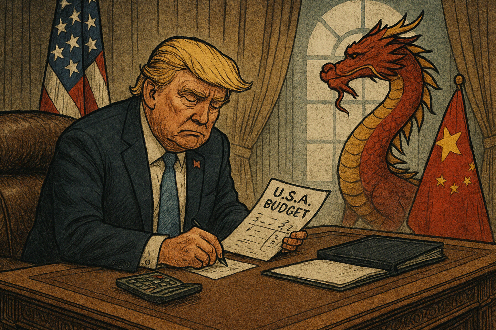

Publicado em 2025-04-20 09:21:40
Donald Trump conduziu a América como quem gere uma mercearia de bairro: com contas feitas em cima do joelho, promessas gritada a plenos pulmões e uma lógica de improviso travestida de pragmatismo. O problema é que os Estados Unidos não são uma banca de fruta. São, ou foram, o epicentro da ordem mundial, o bastião das democracias liberais, o exemplo (ainda que imperfeito) de equilíbrio entre poder e responsabilidade.
Hoje, a herança de Trump continua a pairar como uma nuvem tóxica. O discurso simplista, os gestos teatrais e a obsessão pela imagem não desapareceram. Pelo contrário, infiltraram-se na prática política americana, reduzindo o debate público a slogans, o conhecimento a opinião, e a estratégia a um cálculo emocional de curto prazo.
Sob esta lógica, a América ajoelha-se. Ajoelha-se perante Putin, que manipula o tabuleiro global com a frieza de um xadrezista do caos. Ajoelha-se perante a China, que não precisa de gritar para se impor: avança silenciosa, metódica e com um plano de décadas. Enquanto os EUA se distraem com as suas crises internas e o ruído da própria decadência, Pequim compra estradas, portos, satélites, aliados e silêncios. Dois passos à frente. Sempre.
A NATO, por sua vez, hesita. Sem liderança clara, sem unidade, sem norte. E a ONU observa, impotente, transformada em palco de discursos decorativos. As instituições que deveriam sustentar a paz internacional estão a desfazer-se em formalismos e impotências.
Mas não é apenas nos palácios do poder que se sente a crise. Ela está nas ruas, nos discursos de ódio que se normalizaram, nas redes sociais convertidas em arenas de fanatismo, nas opiniões feitas de memes e ressentimento. O Ocidente, com os EUA à frente, está a perder a sua alma e o seu rumo.
A América merceeira, liderada por homens de ego inflacionado e visão curta, não está à altura do tempo que vivemos. E o mundo, desorientado, assiste a este declínio com um misto de incredulidade e medo.
Ou despertamos da hipnose populista e reencontramos a inteligência coletiva, ou este século será lembrado como o tempo em que deixámos a história cair nas mãos erradas.
Imagem cortesia de OpenAI (c)